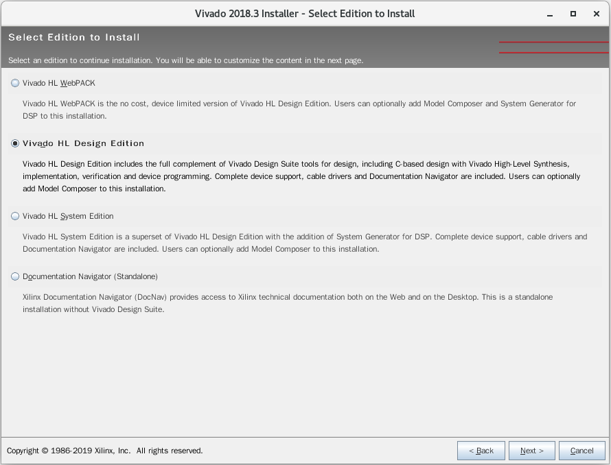
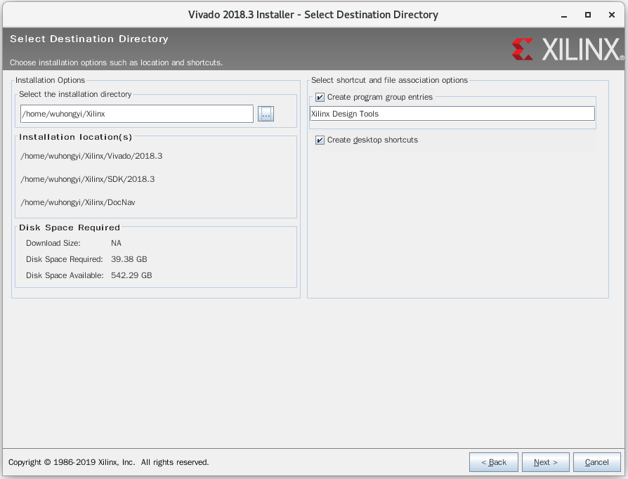
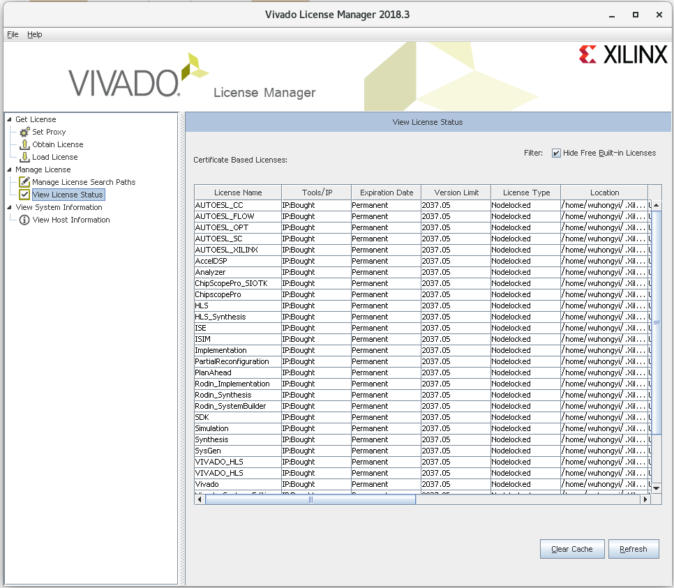

Vivado¶
安装¶
tar -zxvf Xilinx_Vivado_SDK_2018.3_1207_2324.tar.gz
cd Xilinx_Vivado_SDK_2018.3_1207_2324
./xsetup

点击 continue选择不下载最新版本，然后点击 Next 进入下一步

点击三个可选框，然后点击Next进入下一步
选择 Vinado HL Design Edition，然后点击Next进入下一步

直接点击Next进入下一步
选择安装目录，这里我选择安装到 /home/wuhongyi/Xilinx ，然后点击Next进入下一步

等待安装完成

以下两个步骤不是必须的。
将 vivadoLicence.lic 文件复制到 安装目录，这里为 /home/wuhongyi/Xilinx
安装完成之后会弹出以下界面

点击左上方的 Load License，选择我们的 vivadoLicence.lic 文件
然后点击左上方的 View License Status 可查看破解的IP核
编译¶
首次打开时，需要清空 P16_MZTIO_FW_0p01/build 文件夹
Open Vivado. Use Tools > Run Tcl Script to run project generating script …/verilog/xillydemo-vivado.tcl. The resulting project file is in …verilogvivado
There have been cases where the script crashes Vivado, and then the compile has ~100 pin property critical warnings. In such cases, start over.
Compile demo project (generate bitstream). Ignore warnings and critical warnings.
Check build/xillydemo.runs/impl_1/xillydemo.bit
In system debug¶
Is possible???